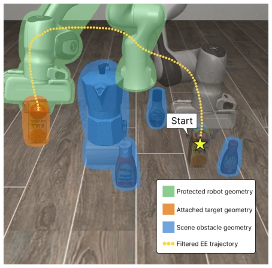
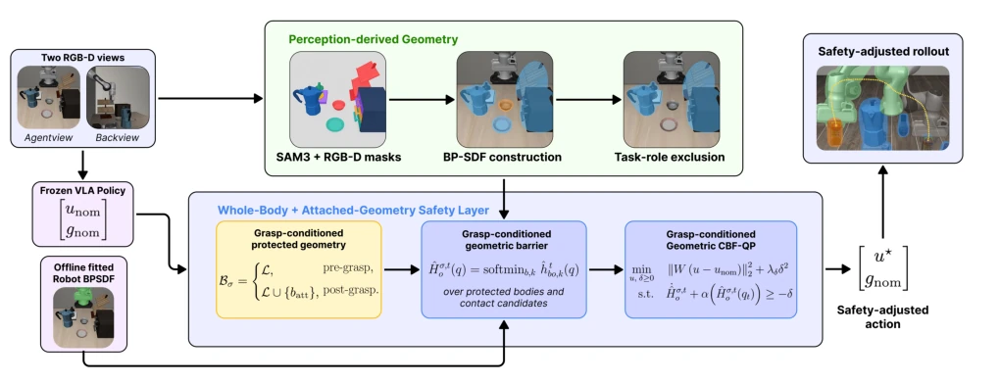
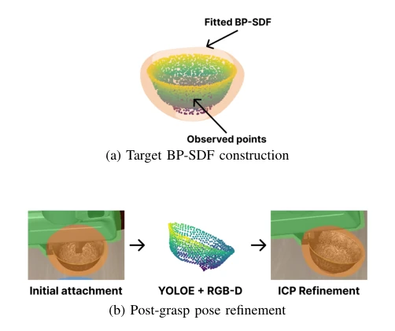
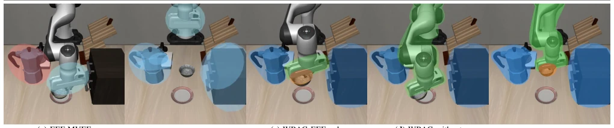

VLA models are extremely prevalent in embodied intelligence, yet safety remains a significant challenge. Existing approaches like AEGIS [6] only consider the end-effector, neglecting collisions involving the arm or held objects. The WBAG approach, employing "whole-body + attached" strategies, effectively combines BP-SDF and CBF, achieving a safety rate of 97%. However, it relies heavily on object IDs provided by the simulator; deploying on real hardware requires re-performing semantic segmentation, otherwise task objects may be misidentified as obstacles. Furthermore, contact search consumes 76% of the time, necessitating optimization for real-time performance. This serves as a reliable physical enhancement for VLA, yet it has not fully escaped the simulator's greenhouse. Future work must resolve uncertainty issues.
VLA models [1] exhibit strong generalization but lack geometric safety models. In cluttered environments, VLA actions may ensure end-effector safety while upstream links or grasped objects collide with walls. Existing runtime safety frameworks [6]-[8] are predominantly simplified to end-effector center representations, neglecting the geometry of manipulator links and attached objects. This results in task completion accompanied by physical violations, for instance, the EEF ellipsoid in AEGIS [6] cannot cover the entire manipulator. A safety framework is needed that can dynamically adapt to grasp states and cover the whole body, avoiding the awkward situation where "the hand is safe but the arm collides".

Fig. 1. Example of our WBAG execution. Green shows the constructed protected whole-body robot geometry, and orange shows the attached target geometry after grasping, with blue showing the extracted scene obstacle geometry. The yellow dotted curve is the filtered safe end-effector trajectory.
The WBAG process is divided into perception, geometry construction, and safety control. First, RGB-D is used to reconstruct the scene and target geometry, with robot link BP-SDF fitted offline. Upon grasp confirmation, the target object is added to the protection set, forming a grasp-conditioned safe set. Geometry is represented using BP-SDF [10], supporting differentiation to construct CBF constraints. Pairwise gaps are aggregated via soft minimum and mapped to the VLA's 6D manipulation space actions. Finally, a QP is solved to minimize the modification amount. The core lies in the dynamic protection set and differentiable geometry representation, requiring no VLA retraining.

Fig. 2. Overview of WBAG. RGB-D observations reconstruct scene geometry, while robot BP-SDFs are fitted offline. Task-role exclusion defines scene obstacles, and the protected set expands from the articulated robot to include attached geometry after grasp confirmation. The resulting composite clearances are enforced by the grasp-conditioned geometric CBF-QP.

Fig. 3. Attached-geometry construction and refinement. (a) The task target is reconstructed from RGB-D observations and represented by a fitted BP- SDF. (b) After grasp confirmation, target RGB-D points are registered to the initial model with ICP, refining the hand-relative attachment pose before rigid propagation with the gripper.
Tested on SafeLIBERO, comparing against Policy Only, AEGIS [6], and SAM3 variants. WBAG achieved 97.38% scene safety and 59.38% safe success. Ablation studies show that both full-body protection and attached geometry improve safety. Runtime is 26.76ms, with the bottleneck in contact search. Failure mode diagrams indicate that EEF protection misses link collisions. Overall performance is optimal, demonstrating that explicit modeling of the full system is more effective than simplified geometry.

Fig. 4. Visual comparison of the configurations in Table I: (a) designated-obstacle EEF-MVEE, (b) scene-wide EEF-MVEE, (c) EEF-only with attached geometry, (d) whole-body without attached geometry, and (e) full WBAG.